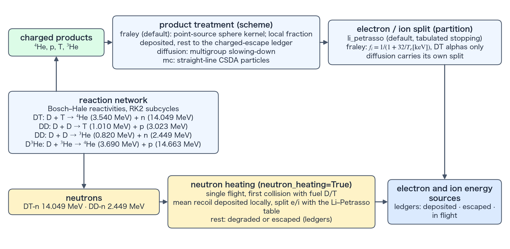

Charged-product transport and deposition
This page describes where the energy of the charged products of burn goes: the product-transport schemes (fraley, diffusion, mc, local), the electron/ion partition, and the burn energy ledger. Terms specific to this calculation are defined in the terms section.
Product transport and electron/ion partition
The default scheme="fraley" combines the Fraley alpha-range fit with a point-source spherical kernel [1] (Point-source sphere kernel and retained fraction). It computes the locally retained fraction from the fuel-sphere areal density and the birth radius, deposits that fraction in the birth cell, and sends the remainder to the charged-escape ledger. scheme="diffusion" uses the Corman 1975 [3] multigroup equations to track the in-flight specific spectra of six products — the charged products of each channel: the DT alpha; the DD proton, triton, and helion (the ³He nucleus); and the D³He proton and alpha — and deposits the energy lost during group-to-group slowing. scheme="mc" keeps straight-line CSDA particles between steps, of the same type as the Monte Carlo tracking of Yuan et al. [4], and samples mc_particles_per_cell particles per product, cell, and step. MC tallies are statistical, but the counter-based random-number streams (Philox4x32-10) remain independent through particle global IDs. local is for 2D RZ only (1D rejects it); it transports no product energy and deposits it entirely in the birth cell (the electron/ion partition is shared with the other schemes).
The default local-deposition split, partition="li_petrasso", tabulates Li–Petrasso stopping over \(T_e,T_i,n_e\) during initialization; runtime performs only interpolation. The alternative Fraley law, \(f_i=1/(1+32/T_e[\mathrm{keV}])\), is restricted to DT alphas; when scheme is fraley or local, it is rejected with DD or D³He. It is also rejected with neutron heating (neutron_heating), because the law is a fit for the DT alpha and cannot partition the energy of the recoiling D and T between electrons and ions. Multigroup diffusion and Monte Carlo each include a stopping partition of their own and do not use this key.

Terms used in this calculation
The retained fraction of the charged products and the bookkeeping of their energy are built from quantities specific to this calculation. The terms below carry meanings specific to TENRYU's implementation, so they are defined here together.
Point-source sphere kernel and retained fraction
The fuel sphere is the contiguous range from the innermost to the outermost of the cells whose summed fuel-material volume fraction exceeds vf_threshold (default \(10^{-3}\)), the fuel cells. Cells inside the range that fall at or below the threshold stay in the range. The radius of the outer edge of the outermost cell is \(R_b\).
The point-source sphere kernel gives, in closed form, the fraction of a charged product's energy that is deposited inside the fuel sphere. A product is assumed to start from a point source at the center of its birth cell, to be emitted isotropically, to travel in a straight line through a uniform medium, and to slow down under an electron drag that is linear in velocity, \(E(s)=E_0(1-s/\lambda)^2\) (\(E_0\) is the birth energy, \(s\) the flight distance, and \(\lambda\) the range). With \(r\) the radius of the birth point, \(u=r/R_b\), and \(\mu\) the cosine of the angle between the flight direction and the outward radial direction, the distance from the birth point to the surface of the fuel sphere is \(L(\mu)=-u\mu+\sqrt{1-u^2+u^2\mu^2}\) in units of \(R_b\). With \(\tau=R_b\bar\rho/(\rho\lambda)\), the fuel-sphere radius divided by the range, the deposited fraction \(f(u,\tau)\) is
$$ f(u,\tau)=\frac12\int_{-1}^{1}\Bigl\{1-\bigl[1-\min\bigl(\tau L(\mu),1\bigr)\bigr]^2\Bigr\}\,d\mu . $$Here \(\bar\rho\) is the trapezoidal radial mean of the density from the center of the birth cell to \(R_b\) [g/cm³], and \(\rho\lambda\) is the product's range expressed as an areal density [g/cm²] (\(\rho\lambda/\bar\rho\) is the range as a length).
The retained fraction is this \(f(u,\tau)\). The retained part \(f\) is deposited in the birth cell (the split between electrons and ions follows partition), and the rest, \(1-f\), is booked in the charged-escape ledger as energy that leaves the fuel sphere. At the center (\(u=0\)), \(f=1-[1-\min(\tau,1)]^2\), which equals 1 for \(\tau\ge1\). At the surface of the fuel sphere (\(u=1\)), \(f\) only approaches 1/2 as \(\tau\) grows (the half of the emission that goes outward escapes). Averaged over sources distributed uniformly in a uniform sphere, \(f\) reduces to the classical expression \(f(\tau)=\tfrac32\tau-\tfrac45\tau^2\) for \(\tau\le\tfrac12\) and \(f(\tau)=1-\tfrac1{4\tau}+\tfrac1{160\tau^3}\) for \(\tau\ge\tfrac12\).
The range of the 3.54-MeV DT alpha is given by the Fraley fit [1]
$$ \rho\lambda_\alpha=\frac{1.5\times10^{-2}\,T_e^{5/4}}{1+8.2\times10^{-3}\,T_e^{5/4}}\cdot\frac{1+0.17\ln T_e}{1+0.17\ln\bigl(T_e\sqrt{\rho_0/\rho}\bigr)}\ \ [\mathrm{g/cm^2}],\qquad \rho_0=0.213\ \mathrm{g/cm^3} $$(\(T_e\) in keV and \(\rho\) in g/cm³; \(T_e\) is limited to at least 0.1 keV and each of the two logarithmic factors to at least 0.15). The ranges of the other products are scaled from the alpha by \(\lambda_s=\lambda_\alpha\sqrt{A_sE_s/(A_\alpha E_\alpha)}\,(Z_\alpha/Z_s)^2\) (\(A\) is the mass, \(E\) the birth energy, and \(Z\) the charge). The electron term and the ion term of the fit are corrected for the composition of the cell (fuel and ash); the correction is 1 for equimolar DT. Because the kernel assumes straight flight, a uniform medium, and a radial mean density, it does not represent the layering of the density along oblique chords.
The kernel estimates, cheaply in a 1D spherical calculation and without tracking the flights, how much of the charged-product energy heats the fuel and how much escapes. The default scheme="fraley" (1D only) uses it, and the retained fraction fixes the energy deposited in electrons and ions and the energy that escapes, and so the strength of self-heating and the ignition margin. The smaller \(\tau\) is (the longer the range compared with the fuel sphere), the larger the escaping fraction. For example, \(f=0.75\) for \(u=0\) and \(\tau=0.5\), and \(f=0.94\) for \(u=0.5\) and \(\tau=1\).
In flight and the burn ledger
The in-flight energy \(E_{inflight}\) is the energy carried by charged products that have been produced but have neither been deposited in a cell nor escaped from the system. Multigroup diffusion carries it into the next step as the specific spectra \(Y_g=N_g/\rho\) [1/g] (\(N_g\) is the particle number density of group \(g\), stored per unit mass like the specific inventory), and Monte Carlo carries it as the particles kept across steps. With fraley and local, a product is either deposited or escapes within the step that produces it, so \(E_{inflight}=0\).
The burn ledger books where the energy released by burn goes, and is part of the overall energy ledger. For the charged products, each step enforces the following identity to within rounding (released = deposited + escaped + change in in-flight energy).
$$ E_{rel}=E_{dep}+E_{esc}+\Delta E_{inflight}. $$Here \(E_{rel}\) is the energy released by the charged products, \(E_{dep}\) the energy deposited in electrons and ions, \(E_{esc}\) the energy that leaves the system (the part leaving the fuel sphere for fraley, the part leaving through the outer surface for diffusion and mc), and \(\Delta E_{inflight}\) the change of the in-flight energy over the step. For neutrons, all the released energy counts as escaped when neutron_heating is off; when it is on, the identity emitted = deposited + degraded + escaped is enforced (First collision and single flight). The overall energy ledger receives only the energy deposited in the fluid, as an external source; escaped energy and neutrons never enter the fluid, so they are not counted as losses. The history channels burn/released, burn/dep_e, burn/dep_i, burn/esc_charged, burn/esc_neutron, the cumulative channels such as burn/E_released_cum, and burn/E_inflight (diffusion and mc only) are this ledger (History channels).
Namelist controls
These are the keys of the top-level Burn block that concern the transport and partition of the charged products. The keys that concern burn as a whole are on the overview page. The defaults in the table are the values used when a deck does not set the key. Studio allows burn only in 1D spherical runs and writes fraley, diffusion, or mc.
| Key | Default | Purpose |
|---|---|---|
scheme | "fraley" | Charged-product treatment: fraley, diffusion, or mc in 1D; local or diffusion in 2D RZ. The default fraley is rejected in 2D, so a 2D deck cannot omit the key and must name one. |
partition | "li_petrasso" | Local-deposition e/i split; fraley is DT-alpha-only and cannot be combined with neutron_heating. |
vf_threshold | 1e-3 | Threshold that identifies fuel cells (a value above 0 and below 1). A cell is a fuel cell when the sum of the volume fractions of the fuel materials exceeds it. In 1D only the cells between the innermost and the outermost fuel cell react, and the outer edge of the outermost cell is the radius of the fuel sphere (terms). In 2D only fuel cells react. |
diffusion_groups / diffusion_E_min_keV | 30 / 20.0 | Charged-particle group count and the bottom edge of the group grid: a product slowed below it deposits its remaining energy locally. The default 20 keV sits far below the MeV birth energies, and the range left below it is negligible. |
mc_particles_per_cell | 16 | Monte Carlo samples per product, cell, and step. |
Verification
- In the unit test
test_burn_deposition, sections G-K0, G-K1, and G-K2 (test tags) cover the Fraley range anchors, the point-source sphere kernel identity, and the sphere-average closed form, and sections G-P1 and G-P2 cover the published Li–Petrasso stopping-power reference values (their Table I [2]) and the intentionally different Fraley partition. The six-run microsphere testburn_rung2_microspherecombines the fuel-pair bound, rate scaling, and early alpha-recapture self-heating. - MC separately gates fixed-seed CV ≤0.1% (CV: coefficient of variation, \(\sigma/|\mu|\)), cross-seed CV ≤5%, and Philox stream independence.
References
- G. S. Fraley, E. J. Linnebur, R. J. Mason, and R. L. Morse, "Thermonuclear Burn Characteristics of Compressed Deuterium-Tritium Microspheres," Phys. Fluids 17, 474–489 (1974). doi:10.1063/1.1694739
- C.-K. Li and R. D. Petrasso, "Charged-Particle Stopping Powers in Inertial Confinement Fusion Plasmas," Phys. Rev. Lett. 70, 3059–3062 (1993). doi:10.1103/PhysRevLett.70.3059
- E. G. Corman, W. E. Loewe, G. W. Cooper, and A. M. Winslow, "Multi-Group Diffusion of Energetic Charged Particles," Nucl. Fusion 15, 377–386 (1975). doi:10.1088/0029-5515/15/3/003
- J. Yuan, G. A. Moses, and P. W. McKenty, "Monte Carlo Charged-Particle Tracking and Energy Deposition on a Lagrangian Mesh," Phys. Rev. E 72, 046706 (2005). doi:10.1103/PhysRevE.72.046706